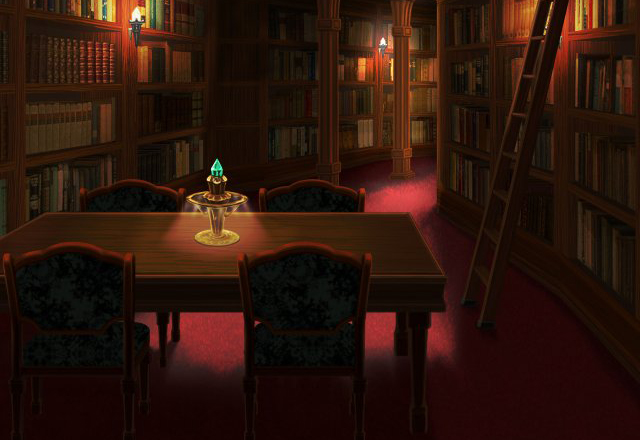

バリウラ地方のグランガイア封穴にて、Shou-chanが、封神ルシアスを倒して間もなくのこと……。
へえー、パリスちゃんっていうんだ。よろしくねー。
わたしの名前は………。
パリスちゃんの髪の毛って、いつ見ても綺麗！
わたしのはダメだよ～。だって手入れとかしてないもん…。
あのね。お母さんがパリスちゃんと遊んじゃいけないって言うんだ。
住む世界が違うって…。
でも、そんなことないよね。
私たちずっと友達だよね…。


パリス
確か彼女は、 私がまだ子供だった頃の……。
ノエル
パリスさんが こんなところに来るなんて、珍しいね。
パリス
ええ、時間ができたので、 たまには本でも読んでみようかと思って。
ノエル
それにしては 微睡んでいたようにも見えたけど？
パリス
もう、すぐに声かけてくれれば よかったのに！
ノエル
まあ、パリスさんが 疲れてるのもわかるからね。
ノエル
パリスさんが所属していた インペリアルガードは現在壊滅状態。
ノエル
今のパリスさんに ちょうどいい場所があるんだ。
ノエル
ゆっくりと 自分を見つめなおせる場所だよ。
パリス
そうね、ここでくすぶっていても 仕方ないかもしれないわね。
ノエル
それにしたって、 覗き見なんて趣味が悪いね、リント。
リント
ボクはここの管理人だし、 図書館では静かにするもんだよ。
リント
あんなに長く話していたんじゃ、 嫌でも聞こえるよ。
ノエル
まあ、確かにちょっと まどろっこしかったかもね。
リント
それにしても “自分を見つめなおせる場所”とはね。
ノエル
パリスさんには早く立ち直ってもらって、 さらに成長してほしいからね。
ノエル
再設予定のインペリアルガードの、 隊長候補最有力だしね。
ノエル
エリオール、テスラ両名を欠いた現在、 皇国には他に人がいない……。
ノエル
エリオールの反乱計画が 一部の上層部に知られて以降、
ノエル
皇国は才能より血筋を重んじた人事に、 切り替えるようだからね。
リント
キミがそんな政治のことに 興味を抱くとは、意外だよ。
ノエル
よしてくれ！ 別に興味なんか抱いちゃいない。
ノエル
パリスさんを“その気”にさせるのに 必要な知識だったから、調べただけさ。
ノエル
…………。 まあ、あの人を成長させるのは、
ノエル
別に彼女のためだけって ワケじゃないけどね。
ノエル
うーん、 実力からいったら問題ないと思うけど……。
ノエル
あの人、 意外と打たれ弱いところあるからなあ。
ノエル
こういう時に うってつけのヤツを１人思い出したよ。